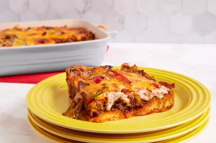

John wayne Casserole

Baked cheese with layers of meat,vegetables,biscuitdough e.t.c
John wayne casserole is named after none other than the actor himself,
Marion Robert Morrison, aka John Wayne. Wayne's casserole is
described as being made with eggs and cheese — it wasn't until
much later that other ingredients such as biscuits, onions,
bell peppers, and jalapeños were added to the recipe to give it a
more Southwestern taste.
ingredients
- 1 (16.3 ounce) can refrigerated biscuits
- 2 pounds ground beef
- 1 (1 ounce) package taco seasoning
- ¾ cup water
- 1 medium onion, halved and sliced
- 1 medium red bell pepper, halved and sliced (1 1/2 cups)
- ½ cup sour cream
- ½ cup mayonnaise
- 8 ounces shredded Cheddar cheese, divided
- 2 medium tomatoes, sliced
- 1 (4 ounce) jar sliced jalapeno peppers, drained (Optional)
Steps
- Make the crust: Press the biscuit dough in the
bottom and up the sides of a prepared baking dish.
Bake in the preheated oven until lightly browned.
- Cook the meat: Cook the beef until crumbly.
Drain the fat, stir in seasoning and water
and bring to a boil. Reduce the heat and simmer.
Transfer the meat to a bowl.
- Cook the veggies: In the same pan, cook
the sliced onions and peppers until tender.
- Make the creamy layer: Combine the sour cream, mayo,
1/2 of the Cheddar, and 1/2 of the cooked
veggies in a bowl.
- Layer and bake the casserole: Layer the meat, tomatoes,
onion-pepper mixture, jalapeños,
and sour cream mixture
on top of the biscuit dough. Sprinkle it with cheese.
Bake in the preheated oven until the cheese is browned
and bubbly.